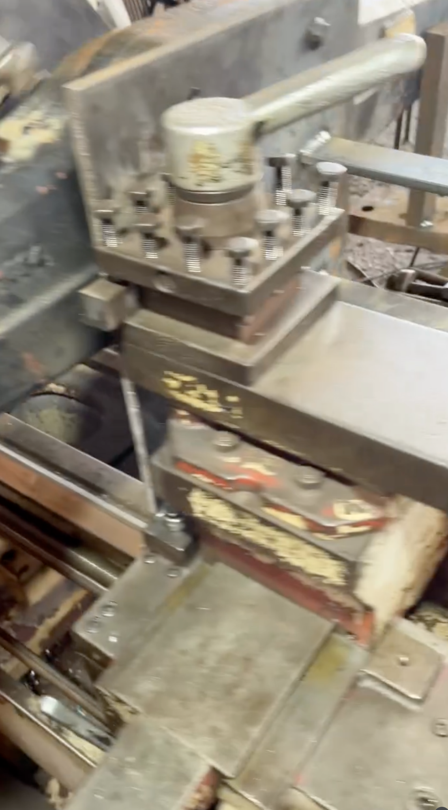
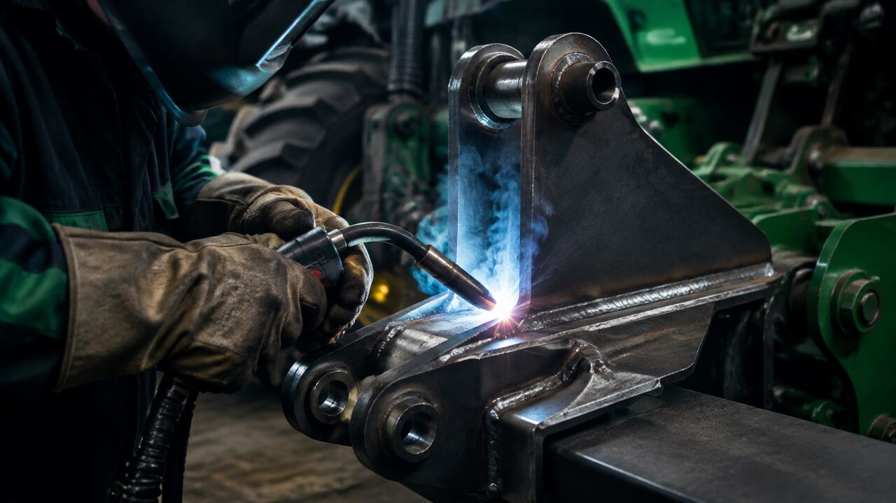
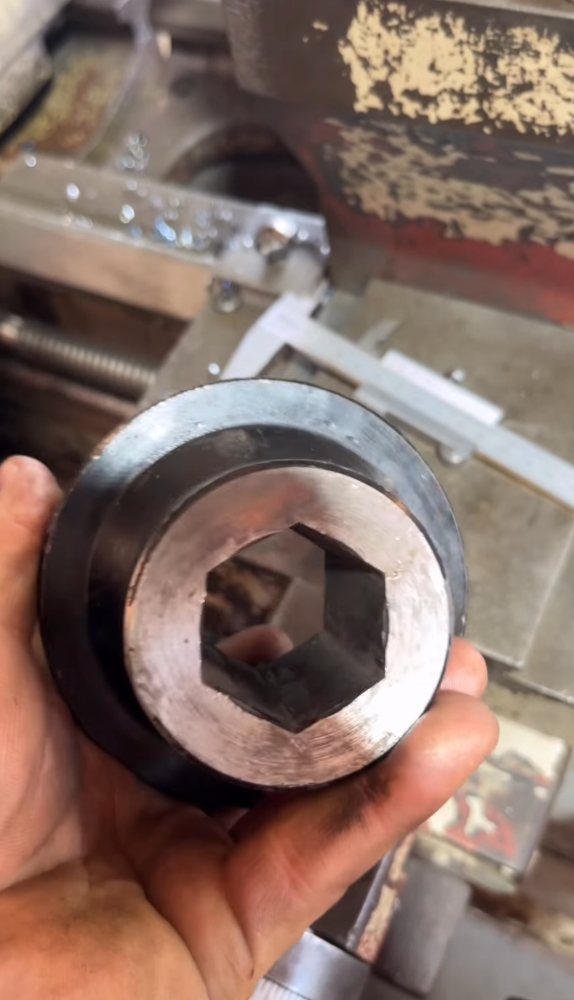
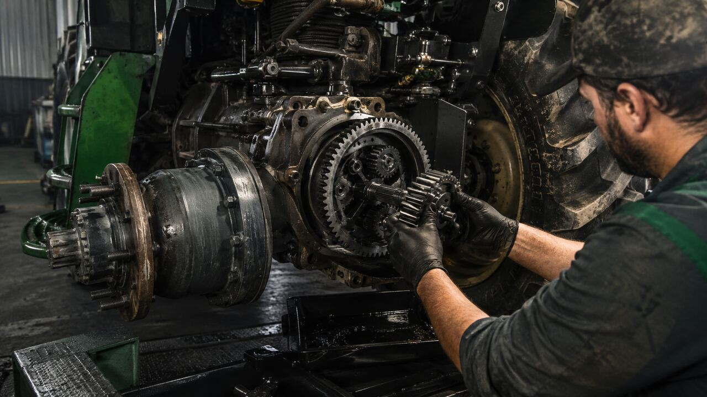
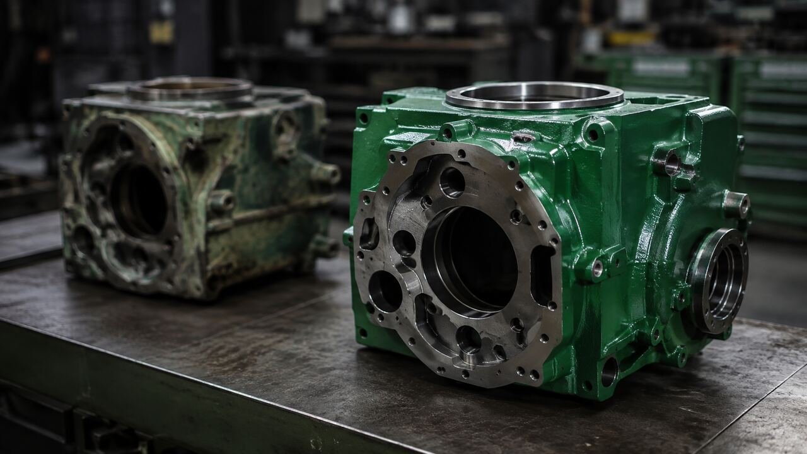

Entender antes de executar
Avaliamos a causa do problema para indicar uma solução realmente adequada.
Cada máquina chega com uma necessidade diferente. A Rural Tork avalia, recupera, adapta e entrega a solução certa para o equipamento voltar ao trabalho.
Conhecemos a urgência de quem depende da máquina todos os dias. Por isso, cada serviço combina experiência prática, precisão técnica e uma solução pensada para a realidade do campo.
Avaliamos a causa do problema para indicar uma solução realmente adequada.
Recuperamos, adaptamos ou fabricamos conforme a necessidade do equipamento.
Precisão, acabamento e resistência para enfrentar a rotina do campo.
Você acompanha o serviço e entende o que foi feito em cada etapa.
O torno e a solda estão no centro da nossa oficina: recuperamos, reforçamos e fabricamos peças para manter máquinas e implementos trabalhando com segurança.

01Quando a peça apresenta desgaste, folga ou já não é encontrada, produzimos a solução na medida certa. Recuperamos medidas, corrigimos encaixes e fabricamos componentes com precisão para cada aplicação.

02Corrigimos trincas, reforçamos estruturas e fabricamos soluções metálicas preparadas para suportar esforço contínuo.

03Quando a reposição não existe ou não atende, desenvolvemos a peça conforme as medidas e as exigências reais do trabalho.

04Identificamos falhas, desmontamos conjuntos e realizamos reparos para recuperar o desempenho de tratores, máquinas e implementos.

05Revisamos o conjunto, recuperamos o que ainda tem vida útil e substituímos o necessário para devolver função e confiança ao equipamento.
Você envia fotos, vídeos ou traz a máquina e a peça para avaliação.
Analisamos desgaste, folgas, medidas e as condições do conjunto.
Recuperamos, fabricamos, adaptamos ou substituímos o que for necessário.
Conferimos o serviço e entregamos o equipamento pronto para seguir.
Não entregamos apenas uma peça reparada. Entregamos a tranquilidade de saber que cada detalhe foi pensado para o equipamento voltar à rotina.
Acompanhar serviços reaisEnvie fotos, vídeos ou descreva o serviço. Nossa equipe faz uma avaliação inicial e orienta você sobre o próximo passo.
Enviar o serviço pelo WhatsApp